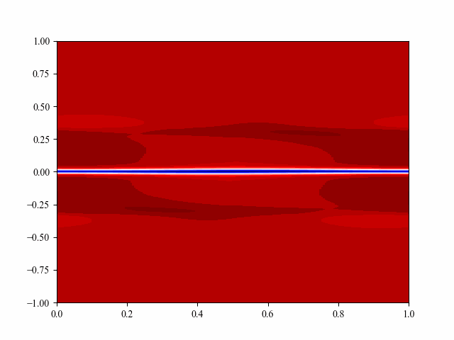
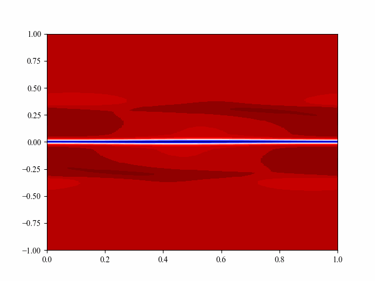
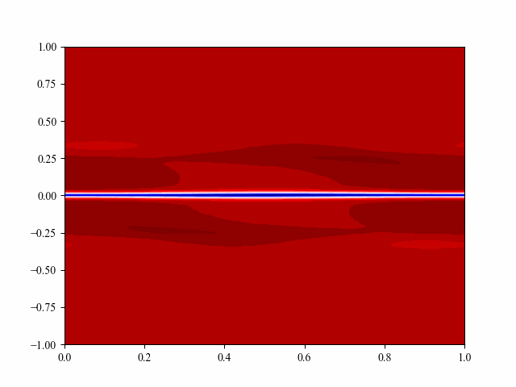
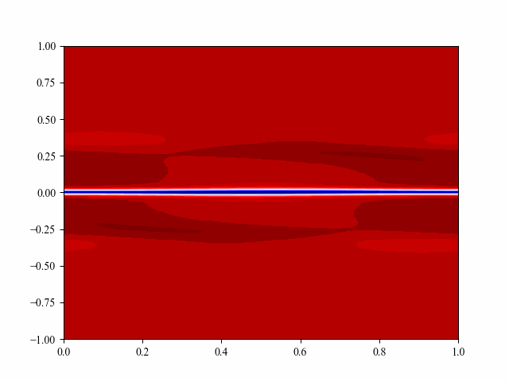
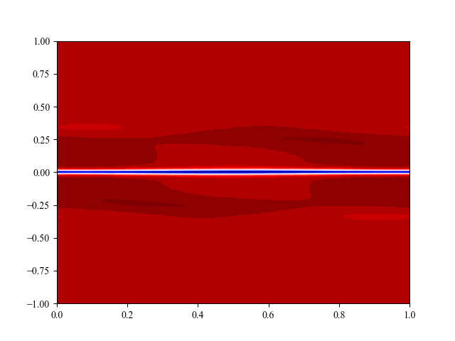
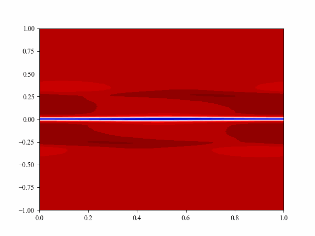

On the next site we gonna talk about some researchs on the area of astrophysical plasmas

Simulation of the KHI with collisions parameter \( \alpha_c = 0.01 \). In this case, showing the charged specieSimulation of the KHI with collisions parameter \( \alpha_c = 0.01 \). In this case, showing the neutral specie


Simulation of the KHI with collisions parameter \( \alpha_c = 1 \). In this case, showing the charged specieSimulation of the KHI with collisions parameter \( \alpha_c = 1 \). In this case, showing the neutral specie


Simulation of the KHI with collisions parameter \( \alpha_c = 10 \). In this case, showing the charged specieSimulation of the KHI with collisions parameter \( \alpha_c = 10 \). In this case, showing the neutral specie

Simulation of the KHI with collisions parameter \( \alpha_c = 100 \). In this case, showing the charged specieSimulation of the KHI with collisions parameter \( \alpha_c = 100 \). In this case, showing the neutral specieOur github Page